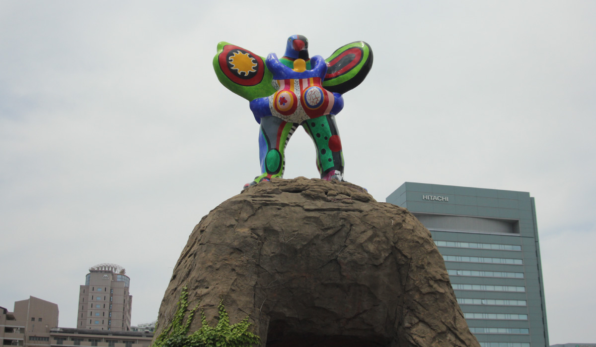

ニキ・ド・サンフォール
福岡PayPayドームを望める地行中央公園には奇妙な鳥がいる。この奇抜なカラーリングの作品、
ホークスの試合観戦によくいく方は目にしたことがあるのではないだろうか。この作品は『大き
な愛の鳥』。エジプトの神「ホルス」と、愛を司る神「クピド」を合体させたものだそうだ。作
者はフランスの美術作家、元々はファッション・モデルとして活動をしていた女性だ。彼女は女
性をテーマにした《ナナ》シリーズを制作し、女性性を肯定・強調した表現をした。《ナナ》シ
リーズが成功した後には、神話・伝説に基づく鳥、蛇などをモチーフにした彫刻作品の制作を始めた。